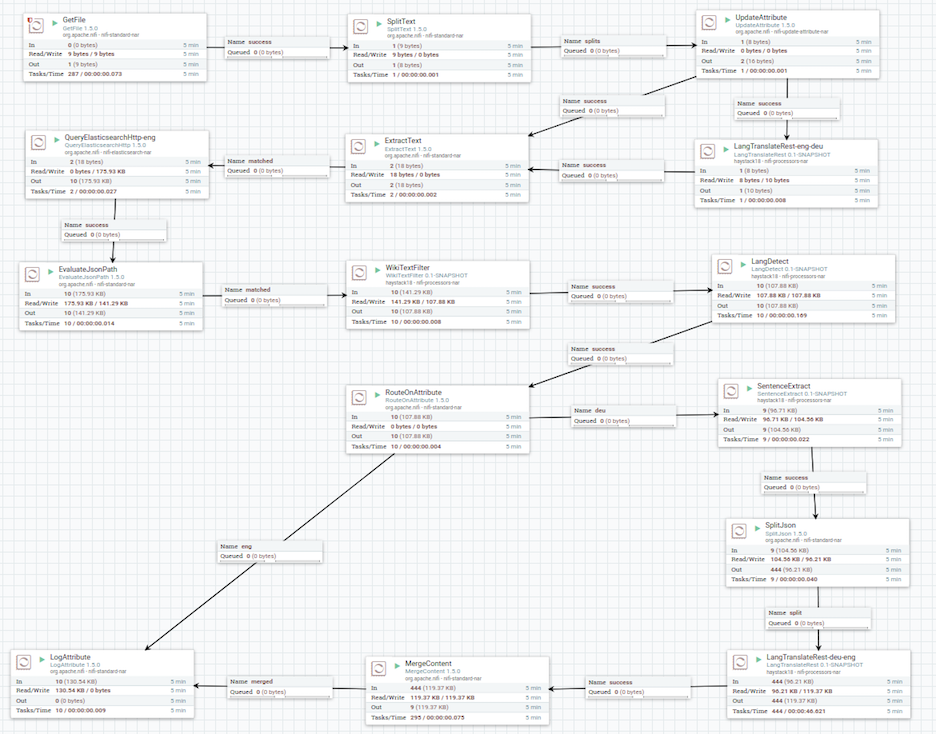

Embracing Diversity: Searching over multiple languages
Jeff Zemerick
Suneel Marthi
April 10, 2018
Haystack Conference, Charlottesville, Virginia
$WhoAreWe
Jeff Zemerick
@mtnfog
- Software and AWS Cloud Engineer
- Contributor to Apache NiFI
- Committer and PMC on Apache OpenNLP
Suneel Marthi
@suneelmarthi
- Member of Apache Software Foundation
- Committer and PMC on Apache Mahout, Apache OpenNLP, Apache Streams
Agenda
- What is Multi-Lingual Search ?
- Why Multi-Lingual Search ?
- What is Statistical Machine Translation ?
- Overview of Apache Joshua
- Dataflow Pipeline
- Demo
What is Multi-Lingual Search ?
- Searching
- over content written in different languages
- with users speaking different languages
- both
- Parallel corpora
- Translating queries
- Translating documents
Why Multi-Lingual Search ?
Embracing diversity
- Most online tech content is in English
- Wikipedia dumps:
- en: 62GB
- de: 17GB
- it: 10GB
- Good number of non-English speaking users
- A lot of search queries are composed in English
- Preferable to retrieve search results in native language
- … or even to consolidate all results in one language
UC1 — tech domain, native first

UC2 — native only ?

What is Machine Translation ?
Generate Translations from Statistical Models trained on Bilingual Corpora.
Translation happens per a probability distribution p(e/f)
E = string in the target language (English)
F = string in the source language (Spanish)
e~ = argmax p(e/f) = argmax p(f/e) * p(e)
e~ = best translation, the one with highest probabilityWord-based Translation
- How to translate a word → lookup in dictionary
- Gebäude — building, house, tower.
- Multiple translations
- some more frequent than others
for instance: house and building most common
Look at a parallel corpus
(German text along with English translation)
| Translation of Gebäude | Count | Probability |
|---|---|---|
| house | 5.28 billion | 0.51 |
| building | 4.16 billion | 0.402 |
| tower | 9.28 million | 0.09 |
Alignment
- In a parallel text (or when we translate), we align words in one language with the word in the other
Das Gebäude ist hoch ↓ ↓ ↓ ↓ the building is high - Word positions are numbered 1—4
Alignment Function
- Define the Alignment with an Alignment Function
- Mapping an English target word at position
itoaGerman source word at positionjwith a functiona : i → j - Example
a : {1 → 1, 2 → 2, 3 → 3, 4 → 4}One-to-Many Translation
A source word could translate into multiple target words
| Das | ist | ein | Hochhaus | ||
| ↓ | ↓ | ↓ | ↙ | ↓ | ↘ |
| This | is | a | high | rise | building |
Phrase-based Translation
Alignment Function
- Word-Based Models translate words as atomic units
- Phrase-Based Models translate phrases as atomic units
- Advantages:
- many-to-many translation can handle non-compositional phrases
- use of local context in translation
- the more data, the longer phrases can be learned
- “Standard Model”, used by Google Translate and others
Phrase-Based Model
| Berlin | ist | ein | herausragendes | Kunst- und Kulturzentrum | . |
| ↓ | ↓ | ↓ | ↓ | ↓ | ↓ |
| Berlin | is | an | outstanding | Art and cultural center | . |
- Foreign input is segmented in phrases
- Each phrase is translated into English
- Phrases are reordered
Decoding
- We have a mathematical model for translation
p(e|f) - Task of decoding: find the translation
ebestwith highest probability
ebest = argmax p(e|f) - Two types of error
- the most probable translation is bad → fix the model
- search does not find the most probable translation → fix the search
Translation Process
Translate this query from German into English
| er | trinkt | ja | noch | nichts |
| er | ||||
| ↓ | ||||
| he |
Pick and input phrase, translate
Translation Process
Translate this query from German into English
| er | trinkt | ja | noch | nichts |
| er | ja noch nichts | |||
| ↓ |  | |||
| he | does not yet |
Pick and input phrase, translate
Translation Process
Translate this query from German into English
| er | trinkt | ja | noch | nichts |
| er | trinkt | ja noch nichts | ||
| ↓ |  | |||
| he | does not yet | drink |
Pick and input phrase, translate
How Good is the Translation ?
BLEU - BiLingual Evaluation Understudy
- The Defacto standard today for evaluating Machine Translation
- Higher BLEU Score => Better Translation
- Measure of Goodness of Fit of a Machine Translation output with a Human
- https://en.wikipedia.org/wiki/BLEU
Apache Joshua
- Statistical Machine Translation Decoder for phrase-based and hierarchical machine translation
- Written in Java
- Provide 64 language packs for machine translation
- https://cwiki.apache.org/confluence/display/JOSHUA/Language+Packs
- Project initiated by Johns Hopkins Univ. and University of Pennsylvania
- Presently incubating at Apache Software Foundation
- https://cwiki.apache.org/confluence/display/JOSHUA
- @ApacheJoshua
Flows


References
- Apache Joshua — https://cwiki.apache.org/confluence/display/JOSHUA
- Apache OpenNLP — https://opennlp.apache.org
- Apache NiFi - https://nifi.apache.org
- GitHub — https://github.com/jzonthemtn/multilanguage-search
NiFi Flow
Credits